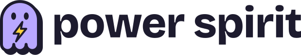
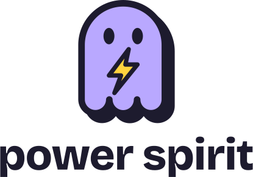
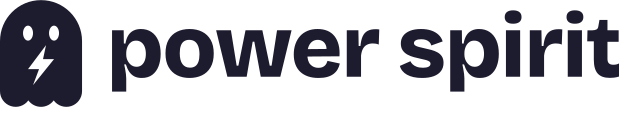
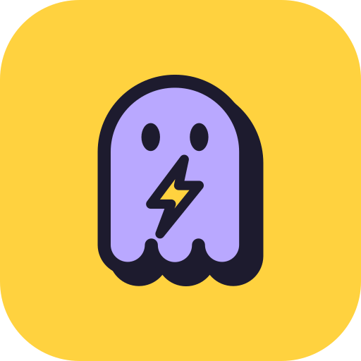
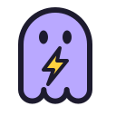
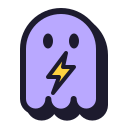
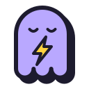
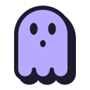

Guide de marque et de design — v1.0. Un fantôme qui porte l'éclair : l'esprit qui passe sans trace, la puissance d'un transfert instantané.
Discute. Partage. Disparais.Fantôme violet, éclair jaune, contour d'encre et ombre dure. Wordmark en Bricolage Grotesque ExtraBold, tracé en chemins.

logo-horizontal-dark.svg
logo-stacked.svg
logo-mono-ink.svg (1 couleur)
icône d'app
logomark-flat (< 32 px)
logomark-mono-whiteZone de protection : ½ largeur du fantôme. Minimum : 100 px (horizontal), 20 px (logomark).
Texte toujours en encre sur aplat. Un seul bouton jaune par écran. Contrastes mesurés contre l'encre.
#1D1B2E · texte, contours
16,8:1 sur papier
#FFD23F · action, éclair
11,6:1
#B9A8FF · mascotte, en-tête
8,1:1
#5FD6A4 · succès, mes messages
9,3:1
#FF6F61 · alerte, exclusion
6,2:1
#DFF3FF · fond d'app
14,7:1
#FFFFFF · surfaces
#4B35C9 · liens, accents texte
7,9:1 sur papier
#4A4766 · texte secondaire
8,8:1 sur papier
#14121F
#1D1B2E · contours #F6F3FF
#27243D · texte doux #B9B4D6 (8,5:1)
Trois familles open source (OFL), hébergées avec l'app : fonctionne hors ligne.
Bricolage Grotesque 700–800 — logo, titres, boutons
Discute et envoie des fichiers.
Rien n'est conservé.
Corps de texte en Figtree 16 px, interligne 1,5. Lisible sur mobile, sans zoom.
Figtree 400–700 — texte courant
08:44 · rapport-final.pdf · 2,4 Mo
JetBrains Mono 500 — heures, tailles
Échelle : 12 · 14 · 16 · 18 · 24 · 32 · 44 px
Contours 2 px, ombres dures décalées. Survol : le bouton se soulève ; clic : il s'enfonce.
Boutons ≥ 44 px, focus visible, état désactivé distinct.
Trois humeurs pour les moments clés de l'interface.



Tutoiement, phrases courtes, verbes d'action, zéro jargon.
| Contexte | On écrit | On évite |
|---|---|---|
| Accueil | « Ton pseudo » | « Veuillez saisir votre identifiant » |
| Salon vide | « C'est calme ici. » | « Aucun message » |
| Exclusion | « Tu as été exclu. Réessaie dans 30 s. » | « Erreur 403 » |